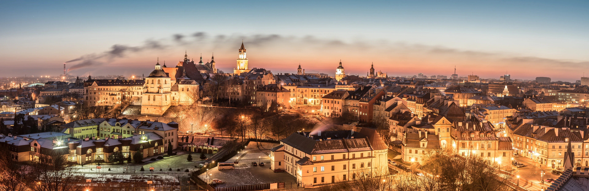

Welcome to the page about
Lublin
in Poland
General information about Lublin
Lublin, administrative centre of the voivodeship and the capital of the Lublin Region, with a population of 336 000 Lublin is the ninth-largest city in Poland. Lublin and its surrounding municipalities are associated under the Lublin Metropolitan Area with the total population of more than 700 000 inhabitants. The location of the town atop loessial rolling hills of the Lublin Upland in the valley of the Bystrzyca river and its tributaries is one of its geographical assets. First settlements started to develop on the future site of Lublin in the sixth to seventh centuries. During the early Middle Ages Lublin grew in numbers, and by 1317 Lublin was granted municipal status. In 1474 Lublin became the capital of the voivodeship, a role it has continuously played to this day. During the years of the first Republic, Lublin, centrally located on the route between the two capitals of the Polish - Lithuanian Commonwealth, was an important political and trade spot, inhabited by different nationalities and religious denominations that constituted a diverse and multicultural community.
Lublin is an academic centre with internationally renowned universities and diverse educational offer. The city's main assets are five universities: Maria Curie-Sklodowska-University, Catholic University of Lublin, Lublin University of Technology, Medical University, University of Life Sciences; and a number of other higher education institutions.